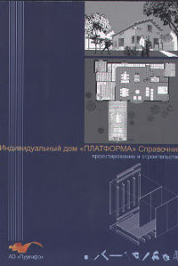
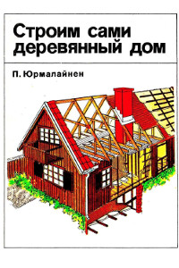
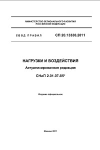
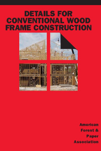
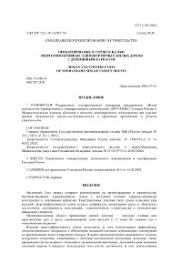

Шепелев А.М. Как построить сельский дом
Довольно старая книга, посвященная строительству частного сельского дома. Книга написана в советское время и сделана основательно и качественно. Здесь вы найдете не только информацию по правильному строительству и проектированию, но и полезные советы, касающиеся организации приусадебного хозяйства. Книги подобного уровня, где все разжевывается простым и понятным языком в современном мире очень большая редкость, так что спешите качать.

М. Вильякайнен и др. “Индивидуальный дом Платформа”
Очень хорошая и подробная книга по технологии "Платформа" от финского автора, есть сечение материалов, очень много доступных и хороших картинок, помогающих понять что и как нужно делать. Все рекомендации по материалам совпадают или даже делаются с запасом, сравнивая с российским СП. Эту книгу вполне можно использовать как дополнительное пособие при проектировании каркаса дома. По сути это качественно сделанный справочник о конструктиве каркасного дома. Обязательна к прочтению.
В.С. Сажин “Не зарывайте фундаменты вглубь”
Подробная и доступная книга, посвященная мелкозаглубленным фундаментам - много объяснений, есть необходимые для проектирования фундамента цифры. Есть информация о о связи конструкции фундамента с конкретными условиями грунта. Книга написана доступным и простым языком, автор - признанный в России авторитет и популяризатор технологии мелкозаглубленных фундаментов. К сожалению, довольно слабо освещена тема плитных фундаментов, наподобие УШП (утепленная шведская плита) и УФП (утепленная финская плита)

П. Юрмалайнен “Строим сами деревянный дом”
Подробная и доступная книга, посвященная каркасному строительству. Во многом повторяет "Индивидуальный дом Платформа", но изобилует детальными описаниями и полезными советами.

СП 20.13330.2011 Нагрузки и воздействия
Российский СП, посвященный расчету нагрузок в самых разных строительных ситуациях, начиная от фундаментов, заканчивая стальными и деревянными конструкциями. Это технический документ, так что здесь много математических формул и очень мало доступных картинок. При строительстве стандартного дома без лишних сложных элементов можно пользоваться готовыми решениями из СП по каркасам или книги "Индивидуальный дом Платформа", но если задумаете что-то нестандартное и лихое, вроде проектирования стропильных ферм из дерева с пролетом в 20 метров (ничего нереального в этом нет, кстати), то этот СП вам необходим, как воздух.

American Forest and Paper Association “Details for Conventional wood frame construction”
Американский СП по каркасам, отличается большим количеством картинок и потому значительно проще для восприятия, чем российский аналог. На английском языке.

СП 31-105-2002 Проектирование и строительство энергоэффективных одноквартирных жилых домов с деревянным каркасом
Российский СП по каркасам, списанный с канадского и американского. Отличается очень плохим качеством картинок и путанными рекомендациями. Для разъяснения деталей лучше дополнительно смотреть американский СП и книгу "Индивидуальный дом Платформа".